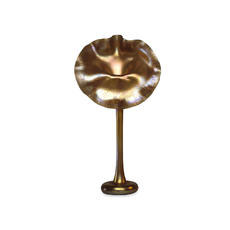

|  |
Europe
and America: The 20th Century
This room follows on from Room 47 (The Nineteenth Century) with
displays of metalwork, jewellery, ceramics and glass from
1900 to 1950. The display is changed as new acquisitions are made.
Particular strengths of the collection include Continental Art Nouveau,
design in Germany from about 1900-1930 (including the work of the
Darmstadt artists' colony and the Bauhaus), Russian Revolutionary
porcelain, and American applied arts of the interwar years.
Almost all of the objects in this gallery have been acquired in
the last twenty or so years since 1979. It was the acquisition of
the Hull Grundy Gift in 1978 (see Room 47) that prompted the Museum
to extend its collections in other areas where it already had great
strengths: ceramics, glass, metalwork, jewellery. Expanding
the ideas for design reform that began in the late 19th century,
such as the involvement of artists...more
 floor map floor map
opening hours
|
| ...in industry, the displays examine the different centres
of production, whether artistic communities or schools of design.
Particular emphasis is given to the variation in the circumstances
that gave rise to the creation of these objects: whether individually
made in a small workshop or factory-made in huge quantities, whether
they were designed by people who had spent their lives creating objects
or by outside artists who may not have been familiar with industrial
processes.
The Modern Collection
was begun in 1979. A small gallery devoted to the collection opened
in 1982. In 1994 the second edition of Decorative Arts 1850-1950.
A catalogue of the British Museum collection was published. Since
then, many new objects have been acquired, by gift, purchase or
bequest, and are shown for the first time. One group covers the
interwar years and includes powerful statements such as the silver-plated
hot water urn designed in 1934 by the Finnish architect Eliel Saarinen,
and, on a smaller scale but no less dramatic: a lacquered silver
bracelet of 1926-28 by Gérard Sandoz. The other group is devoted
to the post-war period and concentrates on the 1940s to the 1960s.
The pots-war section is still very small and unrepresentative. Objects
range from one-off hand-made pieces such as the Murano vase designed
by Dino Martens in 1954 to limited editions such as Floris Meydam’s
vase for Leerdam of 1963, as well as mass-produced items such as
the 1951 Cona coffee-machine by Abram Games.
|
More
Galleries: 36/7 | 41
| 42 | 43 | 44 | 45 | 46 | 47 | 48 | 49 | 50
|